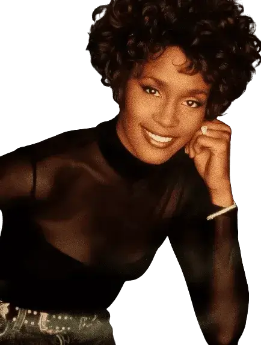
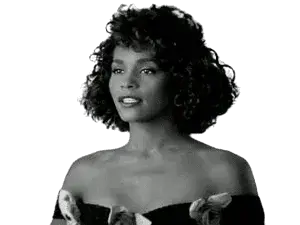

Life and career
1963–1977: Early life and family
Whitney Elizabeth Houston was born on August 9, 1963, at Newark Beth
Israel Hospital (now Newark Beth Israel Medical Center) in Newark,
New Jersey, the daughter of Emily "Cissy" (née Drinkard) and John
Russell Houston Jr.(1920–2003).
Houston's mother Cissy was a Grammy-winning gospel and soul singer, who
was a member of The Drinkard Singers and the founder of The Sweet
Inspirations,
a popular session vocal group that recorded background vocals for the
likes of Aretha Franklin, Jimi Hendrix and Elvis Presley.
The group later earned a Grammy nomination for their hit, "Sweet
Inspiration".
Cissy later left the Sweet Inspirations starting a solo career that
later resulted in two Grammy Award wins for gospel work.
Her father John was a former Army serviceman who later became an
administrator who worked for Newark mayor Kenneth A. Gibson.
Her parents were both African-American.
On her mother's side, Houston was alleged to have partial Dutch and
Native American ancestry.
Through Cissy, Houston was a first cousin of accomplished singers Dionne
and Dee Dee Warwick as well as a distant cousin of opera singer Leontyne
Price.
Aretha Franklin became an "honorary aunt", while Darlene Love later
became Houston's godmother.
Through her father, her
great-great-grandfather Jeremiah Burke Sanderson was an American
abolitionist and advocate for the civil and educational rights of black
Americans during the mid-19th century.
Houston was the youngest child of her parents.
She had three older brothers, paternal half-brother John III
(1943–2021), maternal half-brother Gary Garland,
a former basketball player and singer,and Michael Houston, a songwriter
and road manager.
The family later relocated to a suburban area of
East Orange three years following the Newark race riots of 1967.
Houston attended Franklin Elementary School (now Whitney E. Houston
Academy of Creative and Performing Arts) before transferring to Mount
Saint Dominic Academy by sixth grade.
Houston was raised in the Baptist faith by her parents and joined the
church choir of the New Hope Baptist Church in Newark at age five where
she also learned to play piano.
Houston later recalled being exposed to the Pentecostal church nearby as
well.
Houston made her solo performance debut at New Hope singing the hymn
"Guide Me O Thou Great Jehovah" at age 12.
When Houston became a teenager, she told her mother that she wanted to
pursue a career in music.
Throughout her teenage years, Houston would be taught how to sing by
Cissy.
Along with her mother, cousins Dionne and Dee Dee and Franklin,
Houston was also influenced by other singers such as Chaka Khan, Gladys
Knight and Roberta Flack.
Back to top
1978–1984: Early career
After placing second place at a statewide talent showcase in 1977,
Houston began singing background for her mother's band on the cabaret
club circuit in New York City.
On February 18, 1978, a fourteen-year-old Houston made her non-church
performance debut at Manhattan's Town Hall
singing the Broadway standard "Tomorrow" from the musical Annie,
receiving her first standing ovation.
Later that year, Houston sang background on mother Cissy's solo album,
Think It Over, with the title track later reaching the top 5 of the
Billboard disco chart.
The album's producer Michael Zager recorded her lead vocal on his disco
song, "Life's a Party", with the album of the same name released later
in 1978.
Houston's session vocal career took off when she sang background for
Chaka Khan and Lou Rawls on their respective albums, Naughty and Shades
of Blue, both released in 1980.
Houston became a fashion model after she was discovered by a
photographer who filmed her and her mother during a performance for the
United Negro College Fund at Carnegie Hall.
She became one of the first black women to appear on the cover of a
fashion magazine when she appeared on the cover of Seventeen.
She would also appear inside other magazines such as Glamour,
Cosmopolitan and Young Miss.
Her looks and girl-next-door charm made her one of the most sought-after
teen models.
In February 1981, Houston recorded three demo recordings of gospel music
with producer and music executive Steven Abdul Khan Brown in hopes of
Houston getting signed to a recording deal.
Khan Brown later would claim the demos helped Houston secure her deal
with Arista Records in early 1983.
During this period, Houston was sought after for record deals between
1979 and 1981 by the likes of Michael Zager and Luther Vandross.
The offers, however, were turned down by her mother because she wanted
Houston to finish school.
Weeks after graduation, Houston signed with Tara Productions, under the
advice of her cousin Dionne, and hired Gene Harvey as her manager, with
co-managers Daniel Gittelman and Seymour Flics, also working closely
with the singer.
Houston would see her profile raised after being hired to sing on the
song "Memories" by the band Material, later released on their 1982
album, One Down.
Robert Christgau of The Village Voice called her contribution "one of
the most gorgeous ballads you've ever heard".
Later in 1982, she recorded the soul ballad, "Eternal Love", by producer
and songwriter Paul Jabara, which was later featured on Jabara's 1983
album,
Paul Jabara & Friends, with its original title including Houston's name
on the cover.
The song was later covered by R&B singer Stephanie Mills for her album,
Merciless that same year.
During this time, she was sought after by Elektra president Bruce
Lundvall, who offered her a contract at the end of 1982.
In March 1983, Gerry Griffith, an A&R representative for Arista Records,
saw Houston performing with her mother at the Seventh Avenue South
nightclub in Manhattan.
He convinced Arista head Clive Davis to make time to see her perform at
another nightclub called Sweetwaters the following week.
Davis was impressed and immediately offered a worldwide record deal,
which Houston eventually signed on April 10, 1983;
since she was only nineteen, her parents also signed for her.
Two weeks later, on April 29, Houston performed on The Merv Griffin
Show, after an introduction from Davis.
Her performance later aired on June 23.
She performed "Home", a song from the musical The Wiz.
Houston did not begin work on an album immediately.
The label wanted to make sure no other label signed her away and Davis
wanted to ensure he had the right material and producers for her debut
album.
 Some producers passed on the project because of prior commitments.
Some producers passed on the project because of prior commitments.
Houston first recorded a duet with Teddy Pendergrass, "Hold Me", which
appeared on his gold album, Love Language.
The single was released in 1984 and gave Houston her first taste of
success, becoming a top ten hit on the R&B and adult contemporary
charts.
It would also appear on her debut album in 1985.
She also appeared as a duet vocalist and background singer on Jermaine
Jackson's Dynamite and Kashif's Send Me Your Love albums.
During this early period, Houston continued to model, appeared in a
commercial for the Canada Dry soft drink,
and also began singing commercial jingles, including one for the
restaurant brand, Steak & Ale.
Back to top
1985–1986: Whitney Houston and rise to international prominence
After nearly two years of sessions, Whitney Houston was released on
Valentine's Day, February 14, 1985.
Co-produced by Kashif, Jermaine Jackson, Michael Masser and Narada
Michael Walden,
the album will spend more than three years on the Billboard 200 and shot
up to No. 1 on the chart in March 1986,
over a year after its release, where it would stay for fourteen
weeks.
The album would hit number one or hit the top five in more than ten
other countries.
Certified Diamond in the United States for sales of 14 million copies,
the album has reportedly sold 25 million copies worldwide.
Rolling Stone magazine praised Houston, calling her "one of the most
exciting new voices in years"
while The New York Times called the album "an impressive, musically
conservative showcase for an exceptional vocal talent".
The album launched seven singles in various countries, including four
alone in the United States.
The album spawned four top ten singles on the Billboard Hot 100,
including the top five crossover hit, "You Give Good Love",
and three consecutive number one singles, "Saving All My Love for You",
"How Will I Know" and "Greatest Love of All".

This feat made Houston the first solo female recording artist to launch
three number one singles off a single album.
Outside the US, "Saving All My Love for You" hit number one in the UK
and Ireland,
"How Will I Know" reached number one in Canada, and "Greatest Love of
All" topped the charts in Australia.
In addition, the album's international success was further buoyed by the
ballad "All at Once", which hit the top five in selected European
countries.
Another song, "Thinking About You", became a top ten single on the R&B
chart.
The album would receive four Grammy Award nominations, including three
at the 1986 ceremony,
including Album of the Year, winning one in the Best Female Pop Vocal
Performance category for "Saving All My Love for You".
A controversy arose after Houston was deemed ineligible for entry for a
nomination for Best New Artist.
Despite an angry letter from Clive Davis, the committee defended the
decision, noting Houston's previous chart duet with Teddy
Pendergrass.
Houston received more awards from her work on the album including 14
Billboard Awards, including "Top Pop Artist" and "Top Pop Album",
the first album by a female artist to receive that distinction,and a
NAACP Image Award.
Houston's music video for "How Will I Know" won her an MTV Video Music
Award.
Houston's performance of "Saving All My Love for You" at the 1986
Grammys later resulted in Houston winning an Emmy Award.
Houston would also receive seven American Music Awards, including five
alone in 1987.
Houston first supported the album by being an opening act for singer
Jeffrey Osborne before moving on to open for Luther Vandross.
By October 1985, Houston had become a solo headliner, later opening at
Carnegie Hall.
Houston embarked on her first world tour, The Greatest Love World Tour,
in July 1986.
Houston toured for 50 dates up until the end of the year.
The album's success was attributed to Houston's performances on late
night talk shows, something that was usually not accessible to emerging
black acts.
Though Houston's early music video clips for "You Give Good Love" and
"Saving All My Love for You"
found heavy airplay on stations such as BET and VH1, the singer and
Arista struggled to submit these videos to MTV.
At that time, the channel received harsh criticism for not playing
enough videos by artists of color while favoring predominantly white
acts.
In 2001, Houston explained in an interview with the channel how it
rejected "You Give Good Love" because it was a "very kind of R&B
song".
Following the release of "Saving All My Love for You", MTV agreed to
play its video clip on light rotation because,
Houston said, the song "hit so hard and exploded so heavy" that they
"had no choice but to play it.
In December 1985, Arista submitted the video to "How Will I Know", which
immediately gained heavy rotation and introduced Houston to the young
MTV audience.
Though other artists such as Donna Summer and Tina Turner had enjoyed
heavy rotation on the channel prior to Houston's entrance,
black female artists were still "woefully underrepresented on MTV's
playlist".

According to author Ann Kaplan, in her book, Rocking Around the Clock:
Television, Postmodernism and Consumer Culture,
"until the recent advent of Whitney Houston, Tina Turner was the only
female Black singer featured regularly, and even so, her videos are far
and few between.
Houston was credited for breaking barriers for black female artists on
the channel resulting in videos by Janet Jackson,
Jody Watley and Tracy Chapman to be immediately accepted to the
channel's playlist.
Houston's success also made it possible for other African American
female artists to break through on pop radio following the fallout of
disco, opening doors for Jackson and Anita Baker among others.
Houston's debut album is listed as one of Rolling Stone's 500 Greatest
Albums of All Time and on the Rock and Roll Hall of Fame's Definitive
200 list.
Houston's grand entrance into the music industry is considered one of
the 25 musical milestones of the last 25 years, according to USA Today.
Back to top